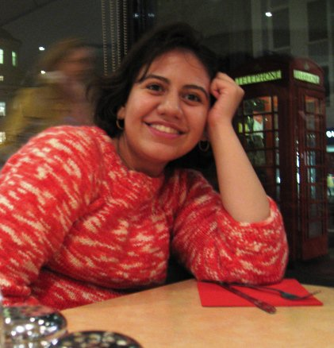
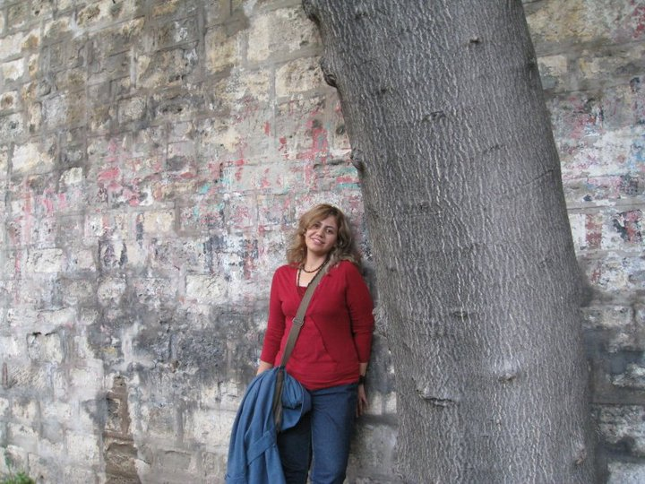
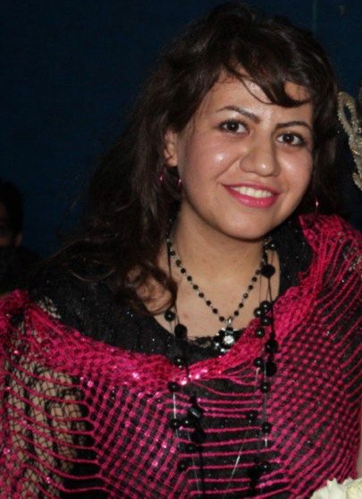

|
|
|
Browsing
Contact Us |
Campaigners |
Face to Face |
Tribune |
Interview |
News |
On the Web |
One Million |
Report
Farsi | Français | German | Italian | Spanish | العربية Also in this section
|
 Bahare Alavi, Missed but Not ForgottenTuesday 26 April 2011 We are saddened today by the passing of our dear friend and colleague Bahare Alavi, a member of the Campaign in Kurdistan province. Bahare Alavi, was a 20 year old women’s rights and Kurdish rights activist and writer based in Kurdistan. In early April on her way back home from a trip with her family, they had a car accident as a result of which Bahare’s father passed away. Bahareh had been hospitalized until last week, when she was released. She was recovering from her injuries at home but passed away suddenly due to an embolism. Her mother has suffered paralysis due to the accident. Bahare touched the lives of many during her short time on this earth. She had an unparalleled passion for life and an unwavering commitment to the fight for equality and justice and was quick to take on the case of those unjustly imprisoned or persecuted. Her kindness and loving spirit have touched all of us who knew her and she will not be forgotten.
 Our deepest condolences go to Bahare’s family, especially her mother and brother, who are still mourning the loss of a husband and father and to Bahare’s close friends who gave her loving support after the tragedy of the accident and the loss of her father. We wish them strength and peace during these difficult times. The Campaign and the Iranian women’s movement have lost one of their brightest stars forever. Bahare will be missed dearly by all of us who were moved by her love, kindness, energy, commitment and passion for life.
 |